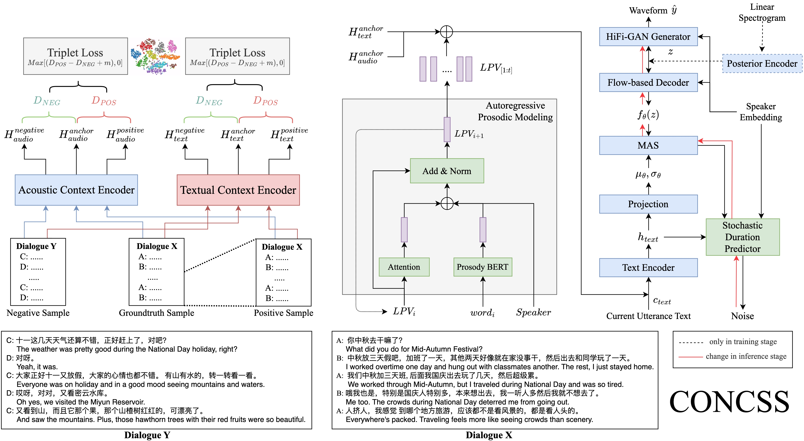

CONCSS: Contrastive-based Context Comprehension for Dialogue-appropriate Prosody in Conversational Speech Synthesis
Abstract
Conversational speech synthesis (CSS) incorporates historical dialogue as supplementary information with the aim of generating speech that has dialogue-appropriate prosody. While previous methods have already delved into enhancing context comprehension, context representation still lacks effective representation capabilities and context-sensitive discriminability. In this paper, we introduce a contrastive learning-based CSS framework, CONCSS. Within this framework, we define an innovative pretext task specific to CSS that enables the model to perform self-supervised learning on unlabeled conversational datasets to boost the model's context understanding. Additionally, we introduce a sampling strategy for negative sample augmentation to enhance context vectors' discriminability. This is the first attempt to integrate contrastive learning into CSS. We conduct ablation studies on different contrastive learning strategies and comprehensive experiments in comparison with prior CSS systems. Results demonstrate that the synthesized speech from our proposed method exhibits more contextually appropriate and sensitive prosody.
Contents
Model Architecture

Compared Models
- GRU-based: proposed by Guo et al. to achieve GRU-based context understanding.
- M2CTTS: proposed by Xue et al for multi-modal context understanding (M2CTTS-M6).
- CONCSS-w/o-APM: The proposed framework without APM module. With regard to various contrastive learning strategies, we ran ablation studies as follows:
- S1: adopts basic contrastive loss proposed by Chopra et al. Besides, it does not employ the sampling strategy.
- S2: utilizes triplet loss without using the sampling strategy.
- S3: employs triplet loss and negative sampling strategy, as illustrated in a certain section.
- CONCSS: The proposed CSS framework, denoted as S4.
Comparison of Dialogue-Appropriate Prosody
Sample 1
history
SPK005: 嗯
SPK006: 然后然后就没有办法，然后就把它们那两只猫拎出去宠物店洗了
SPK006: 然后听说还挠到了人家洗澡的人
SPK005: 嗯
SPK006: 很凶
SPK006: 然后就一直这样，持续了有三四天吧！白天趴在床底下，晚上关了灯以后就开始出来跳
SPK005: 嗯
SPK006: 我真的超级无语那两只猫
SPK006: 然后后来那两只猫
SPK006: 哦有一天我们出去玩
SPK006: 晚然后晚上回来了，回来之后都崩溃了，它们把屋子里所有，它们能动的东西全部都推到了地上
| GRU-based | M2CTTS | S1 | S2 | S3 | S4 |
|---|---|---|---|---|---|
Sample 2
history
SPK050: 对
SPK050: 然后她不是好了嘛，后面给好了
SPK049: 嗯
SPK050: 好了以后就她妈就问她，你一个人去那干嘛去了，她说
SPK049: 嗯
SPK050: 嗯本来是跟几个男孩儿一块儿去的，玩嘛
SPK049: 嗯
SPK050: 然后到了后面天黑，马上就黑了，因为他们走的挺远的，然后就往回走嘛
SPK049: 嗯
SPK050: 往回走的时候，她就说
SPK050: 那几个男孩在前面走，她在后面走，然后走着走着，她就不知道为什么，她就不想走了，她就坐那儿
| GRU-based | M2CTTS | S1 | S2 | S3 | S4 |
|---|---|---|---|---|---|
Sample 3
history
SPK034: 嗯
SPK033: 喷起来，然后就是它会，它叫个老老忠实
SPK034: 嗯
SPK033: 老忠实然后就什么，它会在同一天的同同一同同样的几个时间
SPK033: 固定在这个时间喷发，然后大家就会提前在那个时间然后去那等
SPK034: 嗯
SPK034: 那是人设置的是
SPK033: 不是不是就是自然的，对对对所以它
SPK034: 自然还要
SPK034: 按规律的喷发
SPK033: 对对对，所以它叫老忠实，它就真的，它非常有规律，然后大家就去那边等，结果当时那一天就有两只牦牛
| GRU-based | M2CTTS | S1 | S2 | S3 | S4 |
|---|---|---|---|---|---|
Sample 4
history
SPK049: 嗯
SPK050: 当时跟她去那个庄稼地里面玩的是几个男孩子
SPK049: 嗯
SPK050: 那会儿都很小嘛
SPK050: 一二年级那会儿，都男孩子但是玩到天晚了以后，就是这个事情，是最后她好了以后
SPK049: 大家都走了吧
SPK050: 她妈问她的，你为什么一个人跑跑那边儿去玩去了
SPK049: 嗯
SPK049: 嗯
SPK050: 这个后面再跟你讲啊，就是
SPK050: 她妈不是就骂她嘛，你知道吧，就那天晚上的时候，她一直不说话，她妈开了灯以后她在墙角坐坐着也不说话
| GRU-based | M2CTTS | S1 | S2 | S3 | S4 |
|---|---|---|---|---|---|
Sample 5
history
SPK037: 然后的话里面会有一个主持人，然后会
SPK037: 嗯基本上的话每期都会有几个人，带几个人出去吃，大部分录制节目都是在国外
SPK037: 然后做一个一些美食的品尝，然后最后做评价，做成一个
SPK037: 每一期的话做成一个二三十分钟的一个短视频，然后在那个爱奇艺上面可以看，我坚持了大概两三年
SPK038: 是不是有点儿类似于中餐中餐厅那种
SPK037: 嗯那种是综艺秀，那种是明星他们不是明星，但是他们这个节目做了五年
SPK037: 每次他们都会去那些很大的国家然后各个地方的美食然后评鉴做一个评论
SPK037: 对推荐给大家一些美食的那种
SPK038: 我记得谢霆锋当时也做了一个美食的那个节目
SPK038: 也是去各个国家，我当时还看他们去了印度，然后去做那个
SPK038: 吃他那个咖喱炒饭，还有他们那儿还有一个什么炒饭就是特别出名，就是街边的那种，好像是各种东西炒在一起
| GRU-based | M2CTTS | S1 | S2 | S3 | S4 |
|---|---|---|---|---|---|
Comparison of Context-sensitive Distinctiveness
Sample 1
history
SPK022: 嗯太阳刚出来
SPK021: 我看你发那张那个就是日出的那张照片挺好的
SPK022: 对对对
SPK022: 周围山它那个，寺庙不就建在建在山下边儿，它后边儿那个那个藏经阁我们去了藏经阁里边儿已经
SPK022: 好久都没人打扫了，里边藏的经书也不是特别多，呃松鼠都筑了松鼠都筑了巢了，在里边儿你都能听到松鼠叫
SPK021: 不是他们那个僧侣不扫
SPK021: 那寺庙的那个僧人不去打扫吗
SPK022: 他们僧人特别少，我们在的时候好多师傅都是
SPK022: 南方的，他们就是南方吧然后就是到了夏天比较超热嘛！就来北方寺庙了
SPK021: 哦
SPK022: 然后到了冬天的话北方冷了，然后师傅们就回南方，南方相对说，说暖和一点，好多师傅都是这样的
| Context | GRU-based | M2CTTS | S1 | S2 | S3 |
|---|---|---|---|---|---|
| Real | |||||
| Fake |
Sample 2
history
SPK035: 嗯
SPK036: 那时候的爱情好像特别简单，就是我妈跟我说以前我爸怎么追他的呢
SPK035: 嗯
SPK036: 我爸就是就是，那时候他们不是不是在北京打工嘛，然后在打工的时候就是他们住一个小阁楼上
SPK035: 嗯
SPK036: 就那个阁楼上当时就是，冬天的时候会没有热水，然后就是只有凉水嘛，如果要是
SPK035: 嗯
SPK036: 接水的话需要从那个楼上跑下来，然后大概十几楼的样子
SPK036: 然后我爸就从楼梯上一一一楼一楼的然后就爬下来，为了给我妈接点热水，因为
SPK035: 嗯
SPK036: 要到楼下去接热水，那时候就是条件儿不是很好嘛，毕竟也是二十多年前那时候他们搞对象的时候
| Context | GRU-based | M2CTTS | S1 | S2 | S3 |
|---|---|---|---|---|---|
| Real | |||||
| Fake |
Sample 3
history
SPK049: 这么神奇
SPK050: 对
SPK049: 我靠你这你其实你说这个，我想起来一个就是，另外一个我弟弟小时候的事情
SPK050: 嗯
SPK049: 我弟弟很小因为我弟弟，我比我弟弟大蛮多的嘛，然后他小时候事情我基本上都记得
SPK049: 有一天晚上我爸就是，因为冬天黑的特别早嘛，然后他自己在外面打牌
SPK050: 嗯
SPK049: 回来的又特别晚，当时都十点多了，他才回来，平常都九点过一点儿就回来嘛
SPK049: 那天晚上他回来特别晚，农村的十点多已经特别特别黑了，而且我们那儿当时没有路灯特别黑
SPK050: 嗯
SPK049: 然后他回来之后，然后从他一开始回来，我弟弟就开始哭，一直哭到十二点多，真的我们都没有任何办法了
| Context | GRU-based | M2CTTS | S1 | S2 | S3 |
|---|---|---|---|---|---|
| Real | |||||
| Fake |
Sample 4
history
SPK035: 今天我们的话题是亲情
SPK036: 嗯最近你爸妈来找你了是吧
SPK035: 嗯对呀他
SPK036: 那平时他们给你做饭吗
SPK035: 对呀
SPK035: 每天晚上回家的时候都会，他们都会做好饭然后等我回来
SPK036: 就是之前的时候其实我爸妈也经常来找我嘛，然后他每次来找我的时候，他总是那个
SPK036: 就是我爸妈每次来找我的时候，他每次都是晚上的时候给我做好饭，但是呢他每次做完饭之后都要锻炼我一个能力，他说
| Context | GRU-based | M2CTTS | S1 | S2 | S3 |
|---|---|---|---|---|---|
| Real | |||||
| Fake |